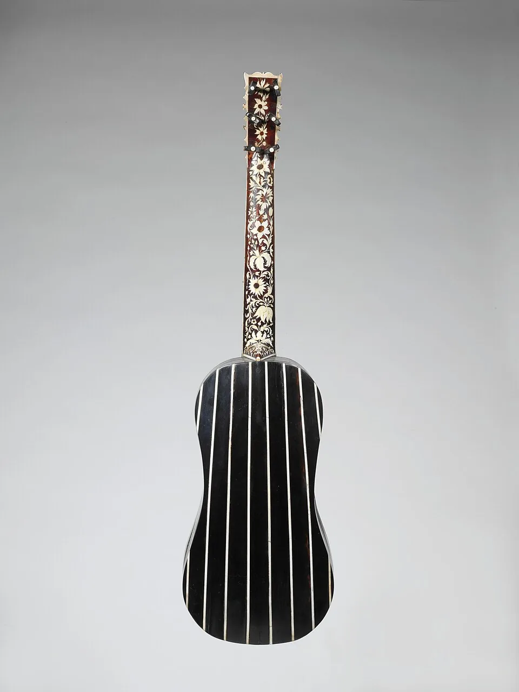
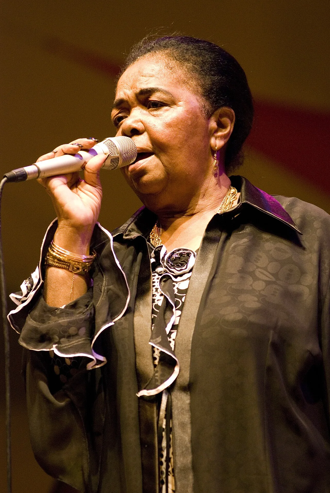

Chapter 1
Nine Minutes from History
On the night of 3 July 2026, at Miami Stadium, Cape Verde — population 527,326 — took Argentina to extra time in the Round of 32 of the World Cup. Lionel Messi opened with a touch and finish in the 29th minute, his 20th World Cup goal. Deroy Duarte squeezed an equaliser into the far corner just before the hour. Lisandro Martínez restored Argentina's lead two minutes into extra time — and in the 103rd minute Sidny Lopes Cabral curled in what Sky Sports called "arguably the goal of the tournament."
The winner, in the 111th minute, was not an Argentine strike. Cristian Romero's header from a corner went in off Cape Verde defender Diney Borges — an own goal. Behind them, 40-year-old captain Vozinha made eight saves; the match reports that called him 39 missed his June birthday. Argentina 3–2, after extra time, and the biggest upset in World Cup history died nine minutes short.
Before kick-off, the odds model gave Cape Verde a 3.4% chance of winning in 90 minutes and an 8.3% chance of still being level when they ended. The night landed inside the 8.3% branch — the improbable one — and stayed there until the 111th minute.
Here is the detail that unlocks everything else in this story: both Cape Verde goalscorers were born in Rotterdam. Duarte, raised in Sparta Rotterdam's academy, scored his first-ever international goal the night before his 27th birthday; Lopes Cabral came through FC Twente's youth ranks. Every Cape Verdean goal against the world champions was scored by a son of the Dutch port.
Which raises the question this whole piece exists to answer: if the goals come from Rotterdam, whose team is this — and how big, really, is the country it plays for?
 Play — Argentina vs Cape Verde highlights (FOX Sports)
Play — Argentina vs Cape Verde highlights (FOX Sports)
Chapter 2
Run the Night Again
The Argentina night was only the last improbability in a tournament built of them. Cape Verde entered the World Cup rated 1654 on our Elo scale, drew 0–0 with Spain, came from behind twice to draw 2–2 with Uruguay, drew 0–0 with Saudi Arabia, and left the group stage unbeaten — three draws, three points, second place, and +45 rating points across the tournament. No team beat Cape Verde in 90 minutes all summer.
The model behind these numbers is deliberately simple and fully public: an ordered-logit fit on Elo difference across 30,195 internationals since 1990, with every constant published and the identical computation shipped as plain JavaScript. From Cape Verde's side it rated the group games at 2.8% (Spain), 11.3% (Uruguay) and 33.4% (Saudi Arabia) chances of victory — and the Argentina tie, across a 523-point rating gap, at 3.4% win / 8.3% level after 90 / 88.3% defeat.
Re-run the night on the published model — then re-match Cape Verde against anyone left in the draw.
All WC2026 venues are neutral — no home-advantage input. Numbers below are model probabilities.
Chance of Cape Verde going through, counting extra time as a coin flip: 7.6%
Level after 90 counts as a coin flip for advancing — an assumption, not a measurement.
Why believe a model like this? Because it was tested where it hurts: trained only on 1990–2014 and scored on 10,681 later matches it had never seen, it beats base-rate guessing by 18.8% on Brier score, and its calibration holds within 2.5 points in every probability decile — teams it gave a 15.1% chance won 13.7% of the time. What would falsify it is a decile table where longshots won far more often than predicted; that table does not exist here.
Two honesty notes belong in plain sight. The 8.3% is the chance of being level after 90 minutes — treating extra time as a coin flip puts Cape Verde's chance of advancing at 7.6%, and the coin flip is an assumption, not a measurement. And the ratings are our own implementation, computed from the full 1872–2026 match record with documented constants; they are not comparable with any published Elo board.
Chapter 3
Whose Team Is This?
Maria da Cruz of Schiedam watched the Argentina match the way she watches every one: "When they're not playing I can just watch the game, but when my children play I'm chasing every ball." Her sons Laros and Deroy Duarte grew up being driven to academy training across the Netherlands in a Toyota Starlet that clocked 276,000 kilometres. Five Rotterdam-born players started Cape Verde's World Cup opener against Spain.
“When they’re not playing I can just watch the game, but when my children play I’m chasing every ball.”
Maria da Cruz, Schiedam — mother of Laros and Deroy Duarte
Read the squad sheet and it stops looking like a team list and starts looking like a map of somewhere else — Rotterdam, Lisbon, Paris, Dublin, Philadelphia. Before the numbers are given away, take the squad apart yourself: switch off the birth countries and watch what remains.
Switch off a birth country
The count the widget reveals: 15 of Cape Verde's 26 World Cup players — 57.7% — were born outside Cape Verde. Six were born in the Netherlands, four in Portugal, three in France, one in Ireland, one in the United States; the imported share peaks in midfield (8 of 12). The squad's birth map is nearly a map of the emigration itself — with the ironic twist that its top birth country, the Netherlands, does not even appear in the UN's emigration table for Cape Verde.
And the diaspora contingent is not squad padding. The 15 abroad-born players carry 414 of the team's 823 career caps (50.3%), and at this World Cup three of Cape Verde's four goals came from players born abroad — Hélio Varela (born in Portugal) against Uruguay, then both Rotterdam goals in Miami. Duarte's equaliser was his first international goal in 34 caps' worth of waiting.
The counterweight matters too: this is a fusion, not an imported XI. The all-time cap and goal records both belong to island-born Ryan Mendes (96 caps, 22 goals), the captain is island-born Vozinha, and 11 of the 26 were born on the archipelago. The team is not Cape Verde pretending to be Dutch; it is Cape Verde as it actually exists — scattered.
Chapter 4
Scouted on LinkedIn
None of this happened by accident. Since 2002 the Cape Verdean federation has systematically recruited among the children of emigrants in Portugal, France, the Netherlands and Ireland — in 2019 the then-coach contacted Shamrock Rovers defender Roberto Lopes on LinkedIn to persuade him to play for his father's islands. Under FIFA rules a dual national who hasn't played a competitive senior match elsewhere is eligible, so Cape Verde's scouts work Europe's academies pitching a country many of their targets have never lived in.
The man who fused it into a team is home-grown: Bubista — Pedro Leitão Brito, born on Boa Vista, 21 caps as a centre-back — took over in January 2020, reached consecutive Africa Cup of Nations, delivered the first World Cup qualification in the country's history, and was named CAF Coach of the Year 2025. His job description is the story's thesis: make Portugal-based, Netherlands-based and island-based players one dressing room.
Before reading on, answer one question about this squad: how many of the 26 play their club football in Cape Verde?
The answer is zero. The 26 players are employed in 14 different countries — Portugal hosts seven, Turkey three, and the list runs through Bulgaria, the United States, Cyprus, Russia and on — and not one plays in the domestic league. Cape Verde's World Cup team is an export product top to bottom: even the island-born players professionalised abroad.
Chapter 5
The Count with Holes in It
Try to count this nation and you hit the wall immediately. The UN's 2024 bilateral migration matrix — the strictest instrument that exists — records 146,396 people born in Cabo Verde living abroad, and that world total is literally the sum of just 24 named destination countries, with no "other" row. Portugal alone hosts 76,835 (52.5%) and France 34,814 (23.8%): three in four counted emigrants live in one of two countries.
Two countries hold it: Portugal (76,835 — 52.5%) and France (34,814 — 23.8%) light up. Three in four counted emigrants live in one of two countries (76.3%).
The long tail: the remaining named destinations draw in to scale — Angola 9,497, Luxembourg 8,211, Mozambique 7,107, Italy 5,847 and on down the table — and the world total accumulates to 146,396. (Estonia and Latvia, at zero in 2024, are footnoted, not drawn.)
The holes: dashed hollow markers appear for the Netherlands, the United States, Spain and Senegal — no row in the 2024 matrix. The birth countries of 7 of the 15 abroad-born squad players are statistically invisible here (six born in the Netherlands, one in the United States).
The payoff: 146,396 is literally the sum of the named destinations, with no ‘other’ row — a floor, not the diaspora.
| destination | y1990 | y1995 | y2000 | y2005 | y2010 | y2015 | y2020 | y2024 |
|---|---|---|---|---|---|---|---|---|
| Portugal | 30179 | 36695 | 44701 | 53008 | 52513 | 59532 | 68299 | 76835 |
| France | 7645 | 10104 | 13572 | 18434 | 22975 | 30310 | 31783 | 34814 |
| Angola | 3569 | 4147 | 4724 | 6209 | 7558 | 8662 | 9215 | 9497 |
| Luxembourg | 1148 | 1278 | 1422 | 1234 | 1060 | 1617 | 7108 | 8211 |
| Mozambique | 2500 | 3439 | 4001 | 5495 | 6262 | 6491 | 6819 | 7107 |
| Italy | 1795 | 2354 | 3004 | 3814 | 4980 | 5764 | 6073 | 5847 |
| Brazil | 5 | 1447 | 1181 | 1285 | 1173 | 1305 | 1523 | 1430 |
| Sao Tome and Principe | 4250 | 3343 | 2488 | 1956 | 1538 | 1363 | 1220 | 1115 |
| Norway | 163 | 167 | 234 | 251 | 382 | 405 | 406 | 451 |
| Guinea-Bissau | 355 | 466 | 576 | 549 | 521 | 552 | 403 | 338 |
| Colombia | 5 | 12 | 12 | 6 | 30 | 94 | 194 | 255 |
| Bolivia (Plurinational State of) | 0 | 1 | 2 | 56 | 110 | 129 | 141 | 157 |
| Iceland | 19 | 28 | 37 | 40 | 41 | 33 | 54 | 82 |
| Sierra Leone | 5 | 4 | 3 | 1 | 6 | 43 | 88 | 82 |
| Denmark | 5 | 11 | 16 | 17 | 24 | 32 | 40 | 43 |
| Togo | 19 | 21 | 23 | 25 | 36 | 40 | 39 | 39 |
| Guinea | 98 | 112 | 78 | 54 | 37 | 34 | 31 | 30 |
| Hungary | 0 | 0 | 0 | 0 | 0 | 5 | 19 | 22 |
| Finland | 2 | 3 | 4 | 6 | 8 | 11 | 13 | 15 |
| Greece | 32 | 33 | 34 | 24 | 14 | 13 | 12 | 13 |
| Bulgaria | 2 | 3 | 4 | 6 | 7 | 6 | 5 | 7 |
| Slovenia | 0 | 0 | 0 | 0 | 1 | 4 | 3 | 3 |
| Dominican Republic | 3 | 4 | 4 | 4 | 4 | 3 | 3 | 3 |
| Estonia | 0 | 0 | 0 | 0 | 0 | 2 | 0 | 0 |
| Latvia | 1 | 1 | 1 | 1 | 1 | 0 | 0 | 0 |
| World | 51800 | 63673 | 76121 | 92475 | 99281 | 116450 | 133491 | 146396 |
Now look at what the matrix cannot see. The Netherlands, the United States, Spain and Senegal have no row at all — not because no Cape Verdeans live there, but because those countries' statistics don't break out small origin groups. The birth countries of seven of the fifteen abroad-born squad players are statistically invisible in the very table that is supposed to measure the emigration. Every number on this map is a floor by construction; the previous UN revision, which did include them, counted 12,601 in the Netherlands and 43,729 in the United States.
Even the floor is climbing fast. The counted stock grew 2.83x between 1990 and 2024 while the home population grew 1.4x; France more than quadrupled (x4.55). The strangest line in the table is Luxembourg: 1,148 to 8,211 (x7.15), almost the entire surge inside a single five-year wave — Cape Verdeans are now 1.21% of Luxembourg's population, the highest density of any destination. A 500-year-old migration is still growing new branches.
Chapter 6
Three Ways to Count a Nation
So how big is the real Cape Verde? Start with the strictest layer and guess before you look: for every 100 people living on the islands, how many counted emigrants — born there, now living abroad — exist somewhere else?
the grid tints 28 whole people; the exact ratio is 27.9
UN born-in-Cabo-Verde floor — the strictest of three layers; the censuses and heritage estimates run far higher.
The answer is 27.9 — even on the floor count, with its four missing host countries, the equivalent of 28 in every 100 residents lives abroad, double the ratio of 1990 (13.8). That is 146,396 counted emigrants against 524,877 residents, and it is the strictest of three layers, not the diaspora.
Rank that ratio worldwide and the company is telling: Cabo Verde sits #20 of the 212 origins the World Bank population data covers, and #2 in Sub-Saharan Africa behind only Comoros. Nearly everything above it is a war economy (Syria, Venezuela, South Sudan), a Balkan or Caribbean emigration state (Albania, Bosnia, Jamaica, Guyana), or a microstate — and Cape Verde's true position is higher still, because the four biggest missing hosts are exactly the ones its count omits.
The second layer is what national censuses see. Statistics Netherlands counts roughly 23,150 people of Cape Verdean background — nearly double the 12,601 born-in-Cape-Verde migrants the UN's 2019 revision recorded there. About 90% live in and around Rotterdam, where the community began with young men signing onto Dutch ships in the 1960s; in the borough of Delfshaven they are almost one resident in eleven. Half a century later, that settlement pattern is scoring World Cup goals.
The third layer is heritage, and in the United States it blows the count open. The American Community Survey finds 106,084 self-reported Cape Verdean Americans (142,570 in the 2024 estimates), concentrated in Massachusetts and Rhode Island — but the US State Department puts Americans of Cape Verdean descent at approximately half a million. The gap is itself history: generations arrived on Portuguese documents before Cape Verde existed as a state, and were folded into other identities the census never unfolded.
If the layers feel abstract, Brockton, Massachusetts is not. Nearly one in five residents of the city is Cape Verdean — locals call the diaspora the country's "11th island" — and after each World Cup match thousands filled downtown; when celebrations turned violent, with at least nine people injured in shootings, the mayor imposed a temporary curfew ahead of the Argentina game. An American city adjusted its municipal bylaws around the fixtures of a 527,000-person African archipelago.
Cape Verde's own state is built around this arithmetic. Emigrants have voted in national elections since 1992; six seats in parliament are reserved for the diaspora — two each for the Americas, Africa and Europe; and Article 40 of the constitution makes citizenship by origin irrevocable, which is precisely what makes the federation's recruitment machine legally frictionless. The government's own diaspora mapping puts the heritage nation at close to 120% of the resident population: more Cape Verde outside Cape Verde than in it.
Chapter 7
Why They Left
The emigration was never a lifestyle choice; it began as survival. The Sahelian archipelago suffered eleven major famines between 1580 and 1866, and the two worst of the 20th century — 1941–43 and 1947–48, under Portugal's Estado Novo — killed an estimated 45,000 people while the colonial government failed to send food. The island of São Nicolau lost 28% of its people; Fogo lost 31%.
The escape routes are the map from the last section, drawn a century early. From the early 1800s New England whaling ships recruited crews in the islands, making New Bedford, Massachusetts the anchor of Cape Verdean America — the packet schooner Ernestina still exists, and carried immigrants between the islands and New England until 1965. And between 1900 and 1970, about 80,000 Cape Verdeans were shipped as contract labourers to the cocoa plantations of São Tomé — deportation dressed as employment.
Out of that history the islands composed their national art form. Morna — voice, guitar, cavaquinho, sung in Creole — was inscribed by UNESCO in 2019 as intangible heritage of humanity; its themes, in UNESCO's own words, are love, departure, separation, reunion and longing. Its emotional core is one untranslatable word: sodade. Its global face was Cesária Évora of Mindelo, and her signature song "Sodade" is addressed to an emigrant bound for São Tomé — the contract-labour route itself, set to music.
 Press play — the song is about this route
Press play — the song is about this route
1990: 4,250 counted in São Tomé — then the third-largest community in the table (the contract-labour generation).
1995–2005: 3,343 → 2,488 → 1,956; declining in every single wave.

2010–2020: 1,538 → 1,363 → 1,220; no new migration replaces the deportee generation.
2024: 1,115. A fall of 73.8%. The song’s subject, leaving the table.
| year | migrants |
|---|---|
| 1990 | 4250 |
| 1995 | 3343 |
| 2000 | 2488 |
| 2005 | 1956 |
| 2010 | 1538 |
| 2015 | 1363 |
| 2020 | 1220 |
| 2024 | 1115 |
The data holds the song's subject like a fading photograph. Of the 25 destinations in the UN table, São Tomé is the one big community dying out: 4,250 people in 1990 — then the third-largest community counted — declining in every single wave to 1,115 in 2024, a fall of 73.8%. No new migration replaces the deportee generation; the community the song mourns is literally disappearing from the table it took a famine to create.
Chapter 8
The Money That Built the Country
What the emigrants sent back became the economy. In 1980, the first year the World Bank measured it, personal remittances were worth 28.2% of Cape Verde's GDP — the all-time peak of the series — and they held an 18–19% plateau through the 1980s and 90s. By 2024 the share was 12.3%, but read the dip correctly: the low of 7.2% in 2010 reflects a denominator transformed by tourism-led growth, not a diaspora gone quiet.
The proof of that reading is 2021. When the pandemic collapsed tourism, the remittance share surged back to 15.3% — the diaspora sent more money precisely when the country needed it most. Dependence receded because the economy grew; the sending never stopped.
1980: the series opens at #2 of 90 (28.2% of GDP — the all-time peak).
1980–2000: the line hugs the shaded top-10 band for 21 consecutive years; #2 again in 1994 and 1995.
2001–2010: the slide to #40 of 179 — a denominator transformed by tourism-led growth, not a diaspora gone quiet.
2011–2024: the settling; the 2021 pandemic re-rise to #21, then 2024: #18 of 160 — still the top 11% of the world.
| year | cpv_rank | n_countries | cpv_pct |
|---|---|---|---|
| 1980 | 2 | 90 | 28.2 |
| 1981 | 3 | 90 | 22.7 |
| 1982 | 3 | 93 | 18.4 |
| 1983 | 5 | 97 | 14.8 |
| 1984 | 5 | 97 | 15.6 |
| 1985 | 6 | 97 | 15.1 |
| 1986 | 6 | 102 | 14.5 |
| 1987 | 5 | 105 | 15.5 |
| 1988 | 3 | 106 | 16.2 |
| 1989 | 3 | 107 | 17.8 |
| 1990 | 4 | 109 | 19.3 |
| 1991 | 3 | 112 | 19.5 |
| 1992 | 4 | 120 | 21.3 |
| 1993 | 5 | 126 | 15.6 |
| 1994 | 2 | 130 | 21.0 |
| 1995 | 2 | 137 | 21.7 |
| 1996 | 3 | 142 | 20.0 |
| 1997 | 6 | 141 | 15.6 |
| 1998 | 8 | 147 | 14.1 |
| 1999 | 7 | 148 | 13.5 |
| 2000 | 7 | 151 | 16.6 |
| 2001 | 11 | 153 | 14.4 |
| 2002 | 11 | 158 | 13.7 |
| 2003 | 14 | 161 | 13.3 |
| 2004 | 15 | 163 | 12.3 |
| 2005 | 18 | 165 | 14.1 |
| 2006 | 21 | 168 | 12.3 |
| 2007 | 31 | 170 | 8.4 |
| 2008 | 34 | 174 | 7.9 |
| 2009 | 37 | 177 | 7.3 |
| 2010 | 40 | 179 | 7.2 |
| 2011 | 37 | 181 | 8.6 |
| 2012 | 35 | 179 | 9.3 |
| 2013 | 35 | 178 | 8.7 |
| 2014 | 31 | 181 | 9.6 |
| 2015 | 23 | 180 | 11.5 |
| 2016 | 22 | 179 | 11.4 |
| 2017 | 24 | 177 | 10.8 |
| 2018 | 29 | 176 | 10.6 |
| 2019 | 30 | 177 | 9.5 |
| 2020 | 23 | 177 | 12.9 |
| 2021 | 21 | 175 | 15.3 |
| 2022 | 25 | 174 | 14.0 |
| 2023 | 24 | 172 | 12.6 |
| 2024 | 18 | 160 | 12.3 |
Rank Cape Verde against every reporting country, year by year, and its entire economic history reads off one line: #2 in the world in 1980, #2 again in 1994 and 1995, inside the global top ten for 21 consecutive years — then a slide to #40 by 2010 as GDP grew, and a settling at #18 of 160 countries in 2024.
Even now, that is the top 11% of the world for remittance dependence, in a bracket with Uzbekistan, Jamaica and Haiti. And here is what the money helped buy: in December 2007 Cabo Verde became only the second country in history to graduate from the UN's Least Developed Country list, and fifty years after independence it is an upper-middle-income state with the second-highest life expectancy in Africa. The diaspora is not a footnote to that development story; it is the financing mechanism.
Chapter 9
From 138th in the World to 64th
Football tells the same fifty-year story in one curve. On our Elo rating, computed from the full match record, Cape Verde bottomed out at #138 of 198 FIFA-family teams in 1998 — a federation that could barely afford fixtures — then climbed almost monotonically for 25 years: #108 in 2010, #86 in 2014, #64 by July 2026. The all-time peak, 1702, was set during the World Cup itself, on 26 June 2026, the eve of the knockout draw that produced Argentina.
our own Elo implementation — trajectory and ranks, not comparable to published boards
The bottoms: 1383 (#115) in 1988; 1384, #138 of 198, in 1998 — a federation that could barely afford fixtures.
The climb: near-monotonic for 25 years — #108 (2010), #86 (2014), the 1655/#65 spike of 2015 and its 2016 dip.
The surge: 1676/#71 (2025) → 1699/#64 (2026).
The kicker: the 47-year maximum, 1702, lands on 26 June 2026 — mid-tournament, on the eve of the knockout draw that produced Argentina; even after that defeat the rating sits within 3 points of the peak.
| year | rating | world_rank | pool_size |
|---|---|---|---|
| 1979 | 1462 | 92 | 144 |
| 1981 | 1454 | 89 | 150 |
| 1982 | 1433 | 96 | 151 |
| 1983 | 1432 | 97 | 148 |
| 1984 | 1397 | 114 | 156 |
| 1985 | 1426 | 100 | 157 |
| 1987 | 1400 | 111 | 156 |
| 1988 | 1383 | 115 | 156 |
| 1989 | 1415 | 110 | 158 |
| 1991 | 1443 | 108 | 164 |
| 1992 | 1424 | 112 | 170 |
| 1995 | 1442 | 120 | 193 |
| 1997 | 1398 | 132 | 192 |
| 1998 | 1384 | 138 | 198 |
| 2000 | 1449 | 118 | 204 |
| 2001 | 1454 | 118 | 205 |
| 2002 | 1448 | 126 | 204 |
| 2003 | 1461 | 118 | 206 |
| 2004 | 1469 | 112 | 206 |
| 2005 | 1420 | 131 | 206 |
| 2006 | 1429 | 124 | 207 |
| 2007 | 1407 | 132 | 206 |
| 2008 | 1430 | 130 | 207 |
| 2009 | 1469 | 117 | 207 |
| 2010 | 1508 | 108 | 208 |
| 2011 | 1505 | 108 | 209 |
| 2012 | 1536 | 98 | 209 |
| 2013 | 1587 | 90 | 209 |
| 2014 | 1599 | 86 | 210 |
| 2015 | 1655 | 65 | 210 |
| 2016 | 1540 | 99 | 211 |
| 2017 | 1544 | 98 | 211 |
| 2018 | 1519 | 105 | 211 |
| 2019 | 1520 | 103 | 210 |
| 2020 | 1504 | 109 | 210 |
| 2021 | 1582 | 85 | 210 |
| 2022 | 1598 | 79 | 211 |
| 2023 | 1591 | 82 | 210 |
| 2024 | 1585 | 84 | 210 |
| 2025 | 1676 | 71 | 210 |
| 2026 | 1699 | 64 | 210 |
The climb has one perfect emblem. Cape Verde's biggest win ever — 2–0 away in Portugal in 2015, a 440-point upset that ranks #73 of the 33,081 decided matches between established teams — came against the very country that hosts 52% of its counted diaspora. Beating Argentina would have ranked around #25 all-time and #2 among World Cup finals upsets ever, behind only Cameroon–Brazil 2022. They came within nine minutes of it.
Where does that leave them now? As the least-populous team in the entire world top 64: every team rated above Cape Verde comes from a country of at least 1.58 million people, three times its size, and the next smaller country on the board appears only at #79 (Iceland). No national team currently converts so few people into so much rating — because no other team's talent pool is triple its census.
Argentina has 87.0× Cape Verde’s population — 20,580 people per rating point, against Cape Verde’s 310.
The smallest country above Cape Verde on this board is Kosovo — 1.58M people, 3.0×; the next smaller country appears only at #79 (Iceland). UK home nations (England, Scotland, Wales) have no World Bank population row and are not in the picker.
| rank | team | elo | population_2025 |
|---|---|---|---|
| 1 | Argentina | 2228 | 45851378 |
| 2 | Spain | 2224 | 49355143 |
| 3 | France | 2197 | 68720337 |
| 4 | England | 2118 | — |
| 5 | Brazil | 2117 | 212812405 |
| 6 | Colombia | 2093 | 53425635 |
| 7 | Portugal | 2078 | 10804871 |
| 8 | Mexico | 2046 | 131946900 |
| 9 | Netherlands | 2045 | 18087633 |
| 10 | Morocco | 2025 | 38430770 |
| 11 | Switzerland | 2018 | 9092436 |
| 12 | Norway | 2002 | 5610870 |
| 13 | Germany | 1989 | 83491249 |
| 14 | Belgium | 1988 | 11941781 |
| 15 | Japan | 1973 | 123366734 |
| 16 | Ecuador | 1964 | 18289896 |
| 17 | Croatia | 1947 | 3876200 |
| 18 | Italy | 1929 | 58915656 |
| 19 | Denmark | 1929 | 6009169 |
| 20 | Uruguay | 1925 | 3384688 |
| 21 | Turkey | 1923 | 85878556 |
| 22 | Paraguay | 1911 | 7013078 |
| 23 | Australia | 1908 | 27614411 |
| 24 | United States | 1893 | 341784857 |
| 25 | Austria | 1889 | 9208163 |
| 26 | Iran | 1886 | 92417681 |
| 27 | Nigeria | 1882 | 237527782 |
| 28 | Senegal | 1880 | 18931966 |
| 29 | Canada | 1874 | 41651653 |
| 30 | Egypt | 1865 | 118365995 |
| 31 | Algeria | 1857 | 47435312 |
| 32 | Ivory Coast | 1843 | 32711547 |
| 33 | South Korea | 1842 | 51684564 |
| 34 | Ukraine | 1842 | 38980376 |
| 35 | Russia | 1841 | 143513328 |
| 36 | Venezuela | 1824 | 28516896 |
| 37 | Scotland | 1822 | — |
| 38 | DR Congo | 1810 | 112832473 |
| 39 | Chile | 1804 | 19859921 |
| 40 | Greece | 1803 | 10413962 |
| 41 | Serbia | 1802 | 6549143 |
| 42 | Sweden | 1799 | 10596620 |
| 43 | Panama | 1775 | 4571189 |
| 44 | Peru | 1772 | 34576665 |
| 45 | Kosovo | 1772 | 1576876 |
| 46 | Poland | 1771 | 36435861 |
| 47 | Hungary | 1768 | 9514251 |
| 48 | Republic of Ireland | 1761 | 5484367 |
| 49 | Czech Republic | 1755 | 10886878 |
| 50 | Costa Rica | 1745 | 5152950 |
| 51 | Wales | 1743 | — |
| 52 | Slovenia | 1738 | 2130986 |
| 53 | Uzbekistan | 1731 | 37053428 |
| 54 | Slovakia | 1725 | 5413813 |
| 55 | Cameroon | 1724 | 29879337 |
| 56 | Jordan | 1720 | 11520684 |
| 57 | Bolivia | 1717 | 12581843 |
| 58 | Honduras | 1711 | 11005850 |
| 59 | Georgia | 1711 | 3935766 |
| 60 | Mali | 1708 | 25198821 |
| 61 | Saudi Arabia | 1706 | 36973555 |
| 62 | Israel | 1701 | 10122800 |
| 63 | Romania | 1701 | 19020271 |
| 64 | Cape Verde | 1699 | 527326 |
The qualification that started it all came on 13 October 2025, in Praia: 3–0 over Eswatini, and a country that had never been to a World Cup had won its group.
Chapter 10
The Eleventh Island
Precision matters for the record books, so state it exactly. Cape Verde (527,326 people) is the third-least-populous nation ever to play a World Cup — Curaçao (156,263) took the all-time record a month after Cape Verde qualified, and Iceland 2018 (352,721) sits between them. Only three sub-million nations have ever played the tournament, all since 2018, two of them in 2026: the 48-team expansion opened a door, and small nations are walking through it.
But one record belongs to Cape Verde alone, and before it is stated, guess its scale: how many times more populous is the next-smallest country ever to survive a World Cup group stage?
…and the average WC2026 participant country (47.2M people) is 89× Cape Verde; the largest, the United States, is 648×.
Where your guess sits among every advancer in history: the 12 all-time advancers span 1.0×–6.8× Cape Verde’s population.
Northern Ireland’s 1982 side (~1.5M, outside the population data) would come second — still about 3× Cape Verde.
Cape Verde is the smallest nation ever to reach the knockout rounds, and it is not close: the next-smallest advancer in history is Uruguay 1966, at 2.7 million people — 5.1 times larger. The average country at this World Cup has 89 times Cape Verde's population; the largest, the United States, 648 times. Among the tables' honest exclusions, only Northern Ireland's 1982 side (about 1.5 million, outside the population data) would even come second — still three times Cape Verde's size.
Since the data snapshot closed on match night: as of 4 July, Cape Verde's tournament is over, and Argentina go on to face Egypt in the Round of 16 on 7 July. A dated note, nothing more — the story this piece tells does not change with the bracket.
The image to end on is not from Miami and not from Praia. It is the Nieuwe Binnenweg in Rotterdam-West — the diaspora's biggest European street, the neighbourhood that produced both goalscorers — strung end to end with Cape Verdean flags for a World Cup being played an ocean away from both the street and the islands. The eleventh island, dressed for the first tournament its country ever reached.
Morna always knew the nation was bigger than the islands; that is what sodade is for. For four matches in an American summer, the rest of the world could finally see what the song had been counting all along — and the question the tournament leaves behind is the one the UN's matrix still cannot answer: when a nation lives mostly elsewhere, who gets counted the next time it nearly beats the world champions?
 Play — Cesaria Evora, ‘Petit pays’
Play — Cesaria Evora, ‘Petit pays’
References
Data
- UN DESA International Migrant Stock 2024 — bilateral destination×origin matrix (born-in-Cabo-Verde floor)
- World Bank WDI — personal remittances received, % of GDP (BX.TRF.PWKR.DT.GD.ZS)
- World Bank WDI — total population (SP.POP.TOTL)
- martj42/international_results — all international A-matches 1872-present (CC0); scores ET-inclusive, shootouts as draws
- 2026 FIFA World Cup squads — Cape Verde’s 26 as registered (squad_2026.csv)
Model & code
- Elo engine (K 60/50/40/30/20, goal-difference multiplier, +100 home advantage, start 1500):
code/elo_ratings.py— our own implementation; not comparable with published Elo boards - Ordered-logit outcome model (C=0.6614, B=2.0468, H=0.2965, SCALE=400), fit on 30,195 internationals 1990-2026, out-of-sample validated 2015-2026:
code/fit_outcome_model.py; identical browser model incode/client_model.js - Charts rendered with Vega-Lite 5.21
Reporting & studies
- Sky Sports — Argentina 3-2 Cape Verde match report
- DutchNews.nl — ‘It’s too tense’, the Duarte family
- The Conversation — Aleida Borges on Cape Verde’s World Cup success
- EUDiF — Diaspora Engagement Mapping: Cabo Verde (~120% heritage estimate)
- U.S. State Department — 200 years of US-Cabo Verde ties (~500,000 of Cape Verdean descent)
- CBS Boston & NBC News — the Brockton curfew
- UNESCO — Morna, musical practice of Cabo Verde (inscribed 2019)
- UN DESA — Cabo Verde’s LDC graduation (December 2007)
- Al Jazeera — Round-of-16 schedule (4 July 2026) — live-status source
Media credits
- Cover & Chapter 7 background: Mindelo harbour — Photo: Manuel de Sousa / Wikimedia Commons (CC BY-SA 3.0); cover motion is a Ken-Burns camera move on the still (no AI video)
- Hard Rock Stadium — Photo: Eisenthesky Productions / Wikimedia Commons (CC BY-SA 4.0)
- Delfshaven — Photo: Michielverbeek / Wikimedia Commons (CC BY-SA 4.0)
- Schooner Ernestina — Photo: National Park Service (public domain), via Wikimedia Commons
- Praia — Photo: Garbsen / Wikimedia Commons (CC BY-SA 3.0)
- Rotterdam flags — Photo: Sneeuwvlakte / Wikimedia Commons (CC BY-SA 4.0)
- Deroy Duarte — Photo: Carlo Bruil Fotografie / Wikimedia Commons (CC BY 2.0)
- Vozinha — Photo: Nha Terra Nha Cretcheu / Wikimedia Commons (CC BY 4.0)
- Bubista — Photo: Polites News (polites.news, CC BY-SA 4.0) via Wikimedia Commons
- Cesaria Evora — Photo: ‘As fotos da Virada!’ / Wikimedia Commons (CC BY-SA 2.0)
- Pico do Fogo — Photo: Holger Reineccius / Wikimedia Commons (CC BY-SA 3.0)
- Soundtrack: ‘Romance Anónimo’ (Spanish Romance), performed by Jim Greeninger — Musopen / Wikimedia Commons (CC0); cover art: Guitar, Joachim Tielke — The Metropolitan Museum of Art / Wikimedia Commons (CC0)
- Flag chips: public domain, via Wikimedia Commons (incl. Flag of Ireland)
- Embedded videos play via the official CesariaEvoraVEVO and FOX Sports YouTube channels, which carry the rights